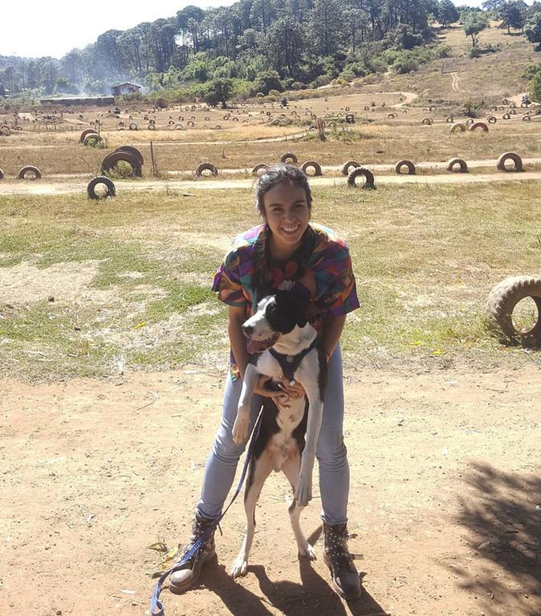

Lo que merece estar en primera plana: ¡Mi compañero favorito!

Les presento a mi Chaplin, un Boxer Collie amante de su pelota y de correr maratones.
Otros de mis hobbies favoritos
Conocer nuevas cafeterías
Amante del café, amante del brunch. Me encanta visitar nuevas cafeterias, probar nuevos tipos de cafés, conocer un poco más a conocer técnicas de extracción. Recientemente he encontrado cafeterías fabulosas como:
Petite pause
Gabinete
La vida runner
Recientemente retomé mis entrenamientos para seguir en la vida de runner y poder correr un medio maratón.Sin embargo esto me ha involucrado...
Renunciar a comer postres
Madrugar y luchar contra seguir durmiendo hasta tarde